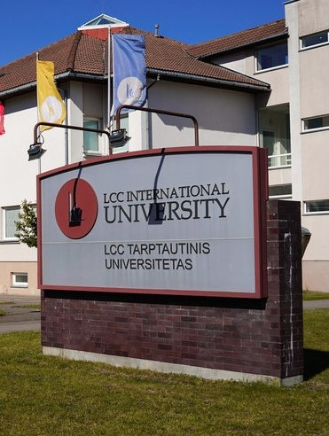

Where you can find me
LCC International University, formerly Lithuania Christian College (LCC), is a liberal arts institution in the city of Klaipėda, Lithuania, established in 1991 by a joint venture of Lithuanian, Canadian and American foundations.
Adress
Kretingos g. 36, Klaipėda, 92307 Klaipėdos m. sav.
Contact me
dduplya22@students.lcc.lt
